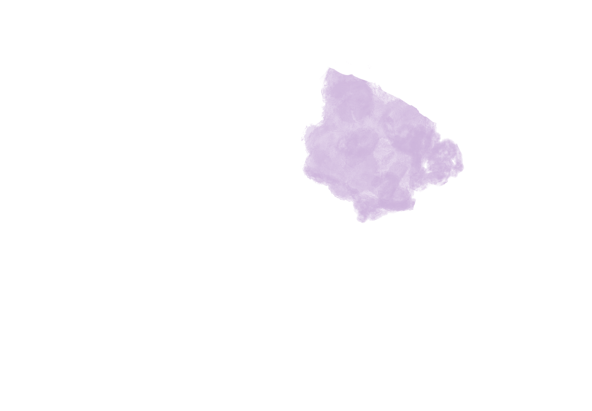

The Many Functions of the Brain!
hover over an area to learn what it does!
The Frontal Lobe
Homemade lemon curd and italian meringue are two
quick and simple
components that combine with store-bought
vanilla cookies to make
this delicious two-bite dessert.
The Temporal Lobe
Soft, tender, and bursting with flavor, these scones are
sure to be a hit.
This gorgeous treat made with flaky
dough is filled with fresh raspberries,
creamy white chocolate
and topped with vanilla glaze.
The Parietal Lobe
This delicious cake uses a simple orange and
almond base to make a show-stopping naked layer
cake, with three layers of moist almond and orange cake
topped with a soft ricotta filling, honeycomb,
candied orange, rose petals and flaked almonds
scattered over the top.
The Occipital Lobe
These decadent, bite-sized macarons combine
dark chocolate macaron shells that have a light crisp,
outer layer with a chewy, chocolatey center
that are sandwiched together with a rich, dark
chocolate fudge frosting.
The Cerebellum
No afternoon tea is complete without an assortment
of tiny sandwiches. These can contain whatever
filling you can dream up, savory or sweet.
Popular options include: smoked salmon, roast beef, egg salad.